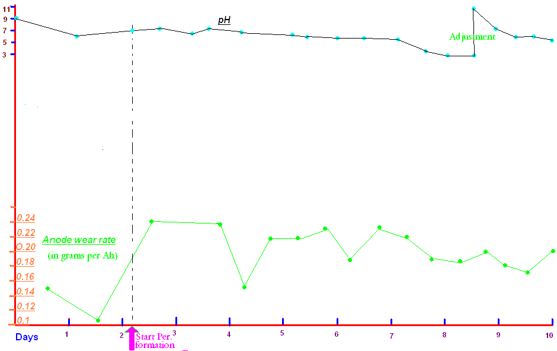

Making Perchlorate with Graphite Anode
Graphite has never been recommended for Perchlorate manufacture in any industrial or scientific
literature that I have seen, except one patent which uses a diaphram. The subject crops up fairly regularly in discussions about Perchlorate making
in amateur circles. Reports from amateurs vary from complete failure on one hand, to complete success on the other, with little erosion and large
copious yields of Perchlorate. A Perchlorate cell with a Graphite Anode was constructed to investigate the issue.
The process yields lots of black sludge and NO extractable Perchlorate.
The set up
The Anode used was a piece of rectangular shaped dense Graphite similar to what is used
in Electro Discharge Machines(EDM). Active dimensions were 13 by 3.05 by 6.35 cm. Active surface area was
264 square centimeters (when new).
The Cathodes (four in total) consisted of Stainless Steel and were placed sensible around the Anode.
The cell contained 2 liters of electrolyte which had dissolved in it a total of 805 grams of Sodium
Chlorate. Thats 402.5 grams Chlorate per liter of solution.
This Chlorate was obtained by
recrystallizing home-made raw Sodium Chlorate twice. This Chlorate contained some Chloride which was determined
to be (using Silver Nitrate) approx. 4% of the recrystallized solid.
Thus the cell contained 33 grams Sodium Chloride (16.6 grams per liter) which is approx. 1.33% wt.
The cell contained 7.56 moles Na Chlorate which give it a 'run time' (assuming 50% current
efficiency, 7 amps and most of Chlorate converted to Perchlorate) of 5 days.
The cell was run for a total of 10 days. A total of 1560 Ah was run through the cell.
4 grams Sodium Fluoride were added to the cell, thats 2 grams per liter.
The current density on the Graphite Anode was kept between 30 and 40 mA per square cm.
The cell was placed in a two gallon (approx.) bucket of water which kept the temperature in the region of
26 to 31C.
The cell was not stirred.
pH was measured but no attempt was made to control it except on one occasion where NaOH was added to increase
pH from a low value of 2.9 up to 10.0(Day 9).
Power was supplied using a 5V computer power supply with a Nichrome wire as a resistor for to vary the
current if the need arose.
Current going into the cell varied from 10 amps at start to 5.75 amps at end of run.
The length of the Nichrome resistor was changed
if current needed changing. This was only done once. As Anode surface deceased the current
decreased itself (for whatever reason) so that current density on Anode was fairly steady.
Voltage across the cell was in the region of 3.66 at start to 3.7 Volts at the end of the run.
A total of 15 sample were taken from the cell over the course of the 10 days. At 10ml per sample that
was a removal of 150ml from the cell. Some Sodium Chlorate solution was added as the first few samples were
removed (three or so) but this was then discontinued. Water was then used to keep cell topped up. The samples were not used since the final yield of Perchlorate was hopeless.
The Anode was weighed every 12 hours or so.
Results
(Save image below if you need to look at the details)

The (small amount of) Chloride was visibly reduced as the cell ran for the first day or so (using a drop of Silver Nitrate into a
small cell sample).
Perchlorate did not appear until 55 hours had passed (using Methylene blue test). It had probably started to form some hours before it was first noticed.
Throughout the run Chloride was present as could be seen from a Silver Nitrate test.
The Anode wear rate is shown in the graph. Grams eroded per Ampere Hour is shown.
The Anode wear rate per Ampere Hour was calculated by taking the reduction of Anode weight between two
weighings and dividing by the Ampere Hours that the Anode passed in that time. pH is also shown on
the graph.
Since the yield of Perchlorate was so low there was little point in ascertaining a figure for the wear
rate per gram Perchlorate produced.
Two test tubes were obtained and 5ml of the start solution was placed in one tube. 5ml of the cell solution
(end of run solution) was placed in the other. 1ml of concentrated KCl solution was then placed into each
tube and crystallization observed. There was no visible difference between each crystallization. Both crystallizations seemed to be K Chlorate.
The process was repeated with one tube containing 5ml end-of-cell-run solution. The liquid was heated to
boiling and 1ml concentrated KCl solution was added. Crystallization began at approx. 35C. At 20C the
crystallized solid (approx. 1 gram) was removed, dried and mixed with an equal quantity of sucrose.
A drop of concentrated Sulphuric acid placed on this mixture which immediately ignited. Thus the cell
product was (unconverted) Chlorate or mostly Chlorate. No Perchlorate can be extracted in any useful quantity or purity by adding KCl.
It should also be noted that one third of the container holding the cell solution consisted
of black sludge sitting on the bottom. The top two thirds consisted of a solution which was a deep
red/brown colour. A total weigh of 300.5 grams of Graphite was eroded. Thats a overall wear rate of
0.19 grams Graphite per Ah.
The Perchlorate yield of the cell was hopeless.
The top of cell and Anode/Cathode assemble showing Anode wear can be seen below
A quanity of liquid was removed from the cell and placed into another cell where considerable further electroysis was carried out at a higher Anode current density. An attempt was again made to obtain Perchlorate from the cell liquor by adding KCl as before. No Perchlorate (pure or close to pure) was obtained. A ppt containing Chlorate(mostly) which (when mixed with sugar) ignited by placing a drop of conc. Sulphuric acid on it.
Two refs. for work done regarding Perchlorate making using Graphite are:
Sihvonen, G., Suomen Kemistilehti, 10B, 27 (1937)
Ullman, Frits, "Enzyklopadie der technischen Chemie", Vol. 3, p 299-307, Berlin, Urban & Schwarzenberg, 1929
HIT THE BACK BUTTON ON YOUR BROWSER
BACK TO TOP